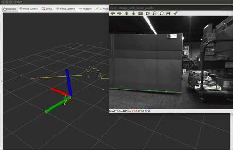

|
Xin-Liang Zhong （钟心亮）
Master candidate
|
Biography
I am currently a third-year Master candidate of School of Mechatronic Engineering, Beijing Institute of Technology. My supervisor is Dr. Qingsheng Luo. Prior to that, I received my Bachelor's degree from Beijing Institute of Technology in 2016.
My research interest includes Computer Vision and SLAM.
About me: [Github] [Youtube] [知乎] [Bilibili]工作经验
2023-至今
硬件在环（HIL）的软硬一体链路实现以及基于HIL的智驾参考实现
1）围绕CARLA仿真器，自研数据注入设备以及域控，实现了仿真器-数据注入设备-域控-底盘-仿真器闭环，搭建了相应的HIL台架，将真实硬件设备接入仿真数据进行上车部署前的测试，加速各个链路验证以及算法的迭代落地 2）编写UE4的着色器使CARLA支持鱼眼相机，整套系统支持1V1R的入门级LKA仿真以及4V的APA泊车仿真 3）CARLA仿真器支持了不同实车底盘can协议 4）基于整套系统开发了LKA/APA参考实现，并在实车上进行了验证 5）...
逼真的仿真数据生成用于训练数据的生成以及智驾corner case生成
1）可以添加如下车辆、定义车辆的基本运动方式，也可以让自车运动起来，当然也可以生成一些corner case，例如圆锥桶在地面 2）注意光影细节、同时可以生成天气变化、白天黑夜的图像 2） 更多细节请电话/邮件联系，个人网页只放最基础的demo

2020-2023
单目视觉在基于已知地图的视觉定位工作
一个通用的 基于视觉地图的定位系统. 它包括:1) 支持传统与深度学习特征的地图创建. 2) 分层定位模块. 3) 支持融合轮速、IMU、GNSS平滑.
[Project page] [ZhiHu] [Code Sample_0] [Code Sample_1] [Related Video_0] [Related Video_1]


多机器人纯自主探索主动式协作快速建图
1）主要是多个机器人基于frontier探索点的方式进行快速地图构建与合并地外采样返回小车

AVP-SLAM 自主代客泊车视觉定位方案
对论文[AVP-SLAM: Semantic Visual Mapping and Localization for Autonomous Vehicles in the Parking Lot(IROS 2020)]的复现，并将整个Gazebo仿真器开源。 [知乎介绍] [Code]
LVIO-SAM 基于因子图的雷达视觉惯性紧耦合里程计
[Code]

RF-LIO 基于视点可见性的动态物体在线移除LIO方法
基本原理：基于range image的方法将submap和当前激光投影到image，根据深度差判断该点是否为动态点。 1.基本框架与定位结果量化对比基于打滑估计方法的纹理稀疏场景定位
洞穴自主探索与返回机器人
1.设计了基于图结构的分层自主探索与返回方案，并结合高程地图计算机器人的局部可通行性地图，使机器人能够在崎岖环境下安全的纯自主探索与采样返回，方案最终在莫干山洞穴进行了大量测试并得以验证 2.机器人青科论坛之导航专场分享《面向地外探测的机器人定位建图与自主探索技术研究》，直播在线观看人数5k+

2019-2020
基于纯视觉的低成本XX无人物流车方案
1) 纯视觉定位方案，包含离线建图以及在线定位两大部分. 2) 基于3D点地图的兼容传统与深度特征点描述子的后端重定位框架，平均定位误差95%以上处于30cm以内. 3) 融合单目鱼眼摄像头的语义分割，检测，深度摄像头的深度信息，超声波信息和IMU信息的感知bev的costmap用于规控.
Projects before 2019
|

|
A tool used for calibrate 2D laser range finder (LRF) and camera.
The package is used to calibrate a 2D LiDAR or laser range finder(LRF) with a monocular camera. Specficially, Hokuyo UTM-30LX have been suscessfully calibrated against a mono camera. [Project page] [Code] |
|
|
A Multi-State Constraint Kalman Filter for Vision-aided Inertial Navigation
The MSCKF_mono package is a mono version of MSCKF. The software takes in synchronized mono images and IMU messages and generates real-time 6DOF pose estimation of the IMU frame. [Project page] [Code] |
|
|
Auto Label Tool for Autonomous Car.
A tool used for automatic label the road sign. [Project page] [Code] |

|
An offline tool for pose-graph-optimization.
This tool can optimize the pose and eliminate the cumulative error. [Project page] [Code] |

|
Reconstruction of the scene based on RGBD-Camera.
It is a simple SLAM system based on RGBD-cameras. [Video] |
|
|
DJI Robomasters Summer Camp.
This projects aims to design an autonomous MAV and a mobile robot that can grab the doll and place it in the bucket corresponding to the doll pattern. [News] [Video] |
|
|
Research on Real-time Location and Construction of Indoor Mobile Robots.
This robot is equipped by the relevant sensor itself can be in a completely unknown environment situation accurately draw the map of the surrounding environment. [Docs] [Video] |
Experiences
- June. 2018 - Aug. 2018 Research Intern, MIG Mobile Robot LAB, Tencent China
- Jul. 2017 - Feb. 2018 Research Intern, SLAM group, DeepMotion China
- Jul. 2016 - Sep. 2016 Research Intern, Robomasters department, DJI China
Awards and Honors
- Jun. 2017: 2017年北京理工大学优秀研究生.
- Jun. 2016: 2016年北京市优秀毕业生.
- Jun. 2016: 2016年北京理工大学优秀毕业生.
- Jan. 2016: 2016年北京理工大学学生科技创新先锋.
- Dec. 2015: 第十四届“挑战杯”全国大学生课外学术科技作品竞赛 一等奖.
- Oct. 2015: 中国航天科技集团公司 CASC 奖学金 一等奖.
- May. 2015: 第八届“挑战杯”首都大学生课外学术科技作品竞赛 一等奖.
- Dec. 2014: 第七届全国大学生创新创业年会荣获“我最喜爱的项目”和“最佳创意项目”.